THE MONEY FLOWS TO CHIPS
지금 세계의 돈은 반도체로 몰려들고 있다!
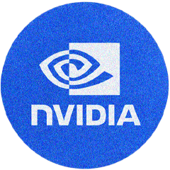
NVIDIA
(AI GPU)
GPU 수요 급증
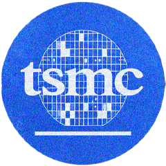
TSMC
(CoWoS)
수요폭증

하이닉스
(HBM)
핵심 공급자
핵심 HBM 수요 급증
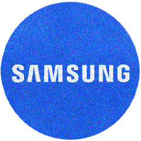
삼성전자
(HBM4/메모리)
HBM4 투자 확대
년도별 AI 산업의 투자 흐름 개념도
현재 AI 산업의 폭발적인 성장은 세계 자본의 흐름 자체를 바꾸고 있다. NVIDIA는 AI GPU 수요 증가와 함께 시가총액이 급격히 상승했고, SK hynix는 HBM 시장 주도권과 NVIDIA 공급 확대 기대감 속에서 큰 폭의 주가 상승을 기록했다. 삼성전자 역시 AI 메모리 경쟁과 HBM4 투자 확대 흐름 속에서 다시 AI 반도체 핵심 기업으로 주목받고 있으며, TSMC 또한 첨단 공정과 CoWoS 패키징 기술을 기반으로 AI 반도체 공급망의 중심축 역할을 하고 있다.
세계 자본은 이제 단순한 소프트웨어 기업이 아니라 AI를 실제로 작동시키는 반도체 공급망 전체로 집중되기 시작했다. 특히 HBM은 기존 DRAM보다 훨씬 높은 부가가치를 창출하는 차세대 메모리로 평가받으며, AI 서버 확산과 함께 수요가 빠르게 증가하고 있다. 이에 따라 SK hynix와 삼성전자는 세계 AI 메모리 시장의 핵심 공급자로 부상했으며, AI 경쟁이 심화될수록 첨단 메모리 기술을 보유한 기업의 영향력과 수익성은 더욱 커질 것으로 전망된다.
AI RUNS ON POWER
AI가 얼마나 많은 전기를 먹는가
국가별 데이터 센터 전력 소비 2024
ChatGPT를 시작으로 생성형 AI 서비스가 빠르게 확산되면서 전 세계 데이터 생성량은 폭발적으로 증가했다. 이를 실시간으로 학습하고 처리하기 위해 데이터센터는 지속적으로 확대되었고, 그 과정에서 막대한 전력 소비가 발생하고 있다. 2024년 기준 데이터센터 전력 소비는 미국과 중국을 중심으로 압도적인 규모를 보였으며, 이는 AI 산업이 막대한 인프라를 필요로 하는 산업으로 변화하고 있음을 보여준다. 2026년 현재 이제 데이터센터는 단순한 서버 공간이 아니라 방대한 데이터를 처리하고 AI를 구동하기 위한 핵심 전력 인프라가 되었으며, AI 경쟁력은 곧 전력과 반도체, 그리고 데이터센터를 확보하는 능력으로 이어지고 있다. 결국 AI 시대의 경쟁은 알고리즘만의 경쟁이 아니라, 전력·데이터센터·반도체를 확보하기 위한 인프라 경쟁으로 확장되고 있다.
AI COMPUTING FLOW
왜 HBM이 AI 성능을 결정하는가
GPU
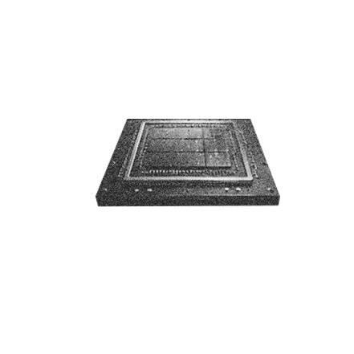
HBM
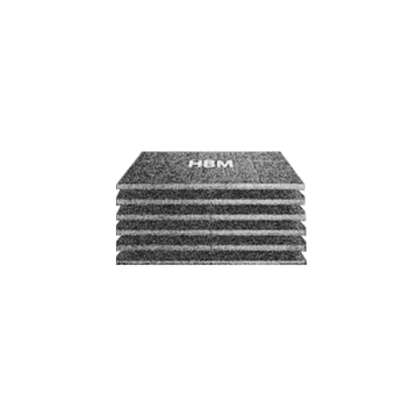
HBM3 / HBM3ECoWoS
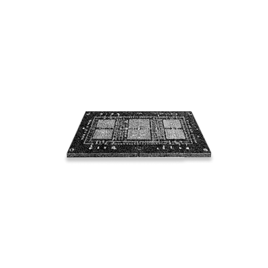
DATA
CENTER
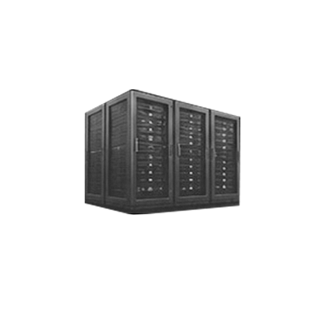

HBM이 AI 시대의 핵심인 이유
AI 데이터센터의 성능을 결정하는 핵심 요소가 되었다. 생성형 AI의 확산으로 데이터 처리량은 폭발적으로 증가하고 있다. 이를 처리하기 위해 GPU는 더욱 높은 연산 성능을 요구하게 되었고, 데이터를 초고속으로 공급하는 HBM이 AI 반도체의 핵심 기술로 부상했다. 또한 GPU와 HBM을 하나의 패키지로 연결하는 CoWoS 기술은 AI 반도체의 성능을 극대화하는 기반 기술로 자리 잡고 있다.
The AI Memory Bottleneck
AI 반도체는 어떻게 만들어지는가
NVIDIA
GPU설계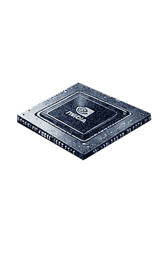
TSMC
첨단 공정 생산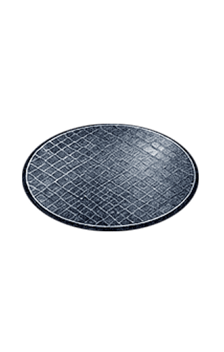
SK hynix
HBM 공급ASML
EUV 장비 공급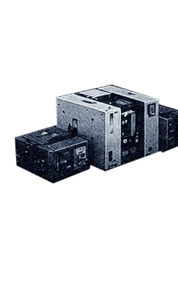
AI 반도체 공급망은 NVIDIA, TSMC, SK hynix, ASML과 같은 기업들이 긴밀하게 연결된 구조로 이루어져 있다. NVIDIA가 GPU를 설계하면 TSMC는 이를 첨단 공정으로 생산하고, SK hynix는 고대역폭 메모리(HBM)를 공급한다. 또한 ASML은 EUV 장비를 통해 첨단 반도체 생산을 가능하게 만든다. 생성형 AI의 폭발적인 성장으로 GPU 수요는 급격히 증가했고, 기존 DRAM의 한계를 극복하기 위해 HBM이 AI 반도체의 핵심 기술로 부상했다. 여기에 GPU와 HBM을 연결하는 CoWoS 패키징 기술의 중요성까지 커지면서 공급망 전반에 새로운 병목현상이 발생하기 시작했다.
이제 부족한 것은 단순히 칩이 아니다. 칩을 설계하고, 생산하고, 연결하고, 패키징하고, 냉각하는 모든 과정이 동시에 한계에 직면하고 있다. 그 결과 세계 자본은 반도체뿐만 아니라 전력, 냉각, 데이터센터 인프라 산업으로 빠르게 이동하고 있다.
BEYOND THE CHIP
전력과 냉각의 시대
냉각기술
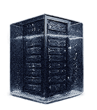
액침 냉각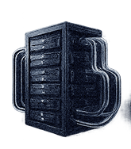
수냉식 냉각다음기술
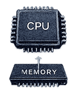
CPU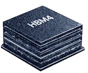
HBM4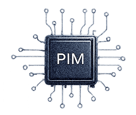
PIMAI 데이터센터는 더 많은 전력을 소비하고 더 많은 열을 발생시키고 있다. 이에 따라 액침 냉각, 수냉식 냉각, 해저 데이터센터와 같은 차세대 냉각 기술이 주목받고 있다. 한편 HBM4는 더 높은 대역폭을 제공하는 차세대 AI 메모리이며, CXL은 메모리를 효율적으로 연결해 시스템 활용도를 높이는 기술이다. 또한 PIM은 메모리 내부에서 직접 연산을 수행해 데이터 이동을 줄이고 전력 효율을 향상시키는 차세대 반도체 기술로 주목받고 있다.
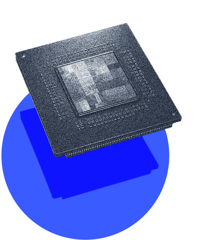
작은 칩 하나가 전력과 인프라의 시대를 열었다.
AI 데이터 센터 전력 수요 전망
2030년 전력 수요가 2배 가까이 증가할 것으로 전망
작은 칩 하나의 발전은
AI를 넘어 전력과 인프라의 경쟁까지 바꾸고 있다.